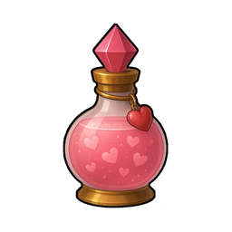
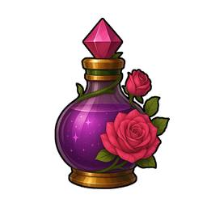
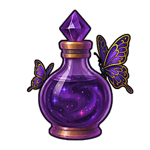
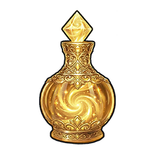

Taux de Capture des Créatures
⚠️ Les pourcentages affichés correspondent au cas où la créature est à 1 HP.
Plus la créature a de HP restants, plus le taux de capture sera réduit.
Plus la créature a de HP restants, plus le taux de capture sera réduit.
Les taux de capture dépendent de la potion utilisée et de la résistance de la créature. Cliquer sur un en-tête de colonne pour trier.

Potion de capture I (base 20%)
Potion de capture II (base 40%)
Potion de capture III (base 60%)
Potion de capture IV (base 80%)| Créature | Résistance | Potion I | Potion II | Potion III | Potion IV |
|---|